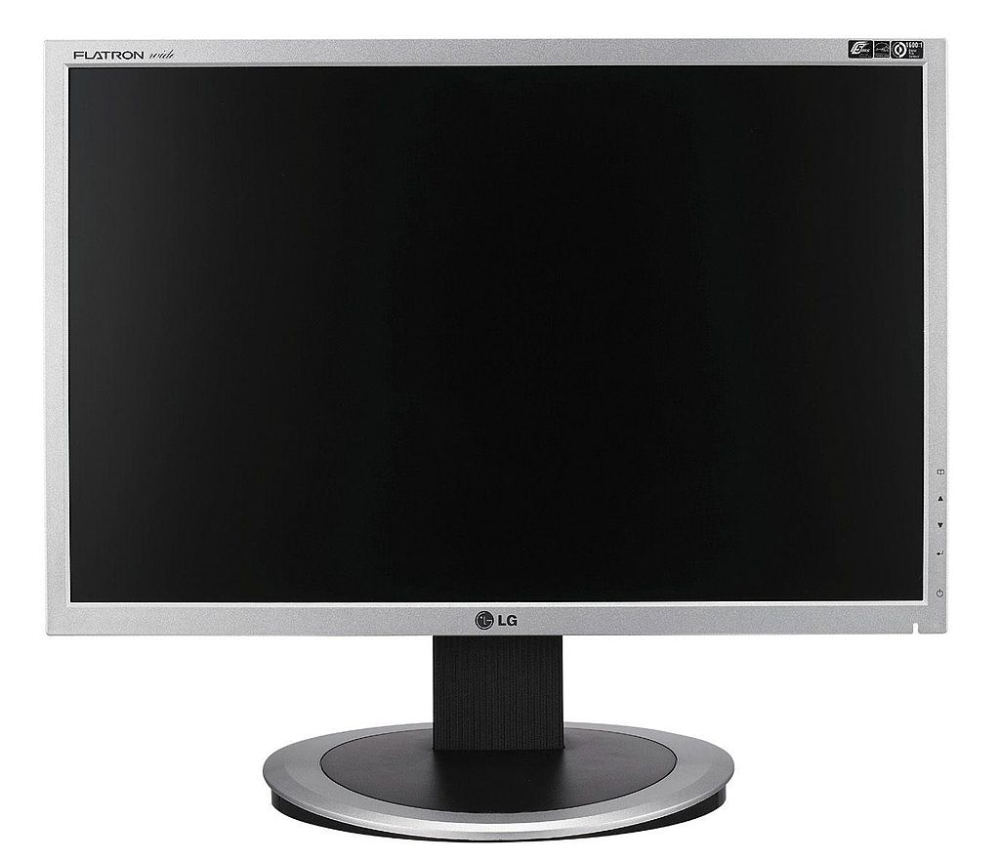

Näyttö eli monitori on tietokoneen oheislaite, joka antaa käyttäjälle välitöntä visuaalista palautetta. Laitteelle on kehitetty myös termi näytin[1]. Näytöt voidaan tekniikkansa perusteella jakaa kahteen pääluokkaan: emittoiviin eli valoa säteileviin ja ei-emittoiviin eli valoa heijastaviin.  lähde:wikipedia